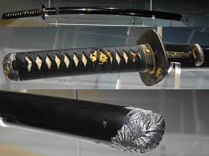
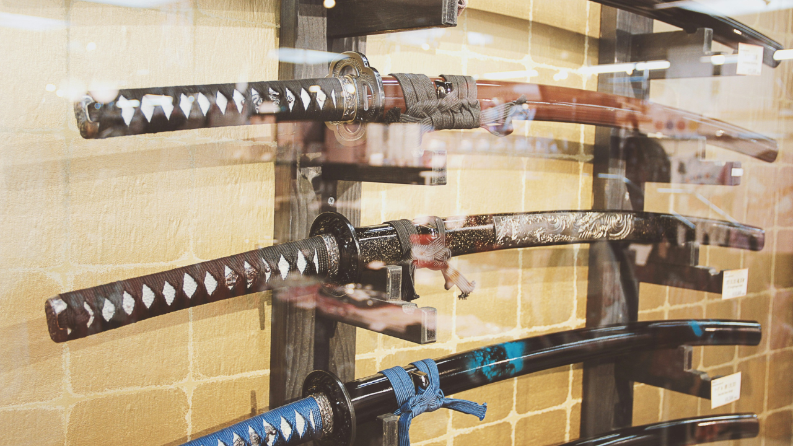

Museum-Quality Japanese Daishō: Katana & Wakizashi Sword Mountings (Koshirae) with Black Silk Ito and Ethereal Ray Skin (Samegawa)
Our best-selling katana
Price: $149.99
This exquisite set features the complete mountings, or koshirae, for a classic Japanese Daishō—a paired Katana (long sword) and Wakizashi (short sword)—signifying the status of a samurai. These mounts are crafted in a classic, high-quality style, appealing to collectors, martial artists, and enthusiasts of Japanese history.
Edo-Period Style Katana Koshirae (Mountings) with Black Lacquer Saya and Silvered Kojiri Accent

Our cheapest-selling katana
Price: $119.99
This set of sword mountings is designed for a single long sword (Katana), emphasizing a sleek, functional, and highly refined aesthetic characteristic of the late Edo period. The focus is on deep, rich black elements contrasted with gold and a unique silvered metal detail.
The Samurai Koshirae Trio: A Collection of Three Unique Japanese Katana Mountings with Varied Saya Lacquers and Ito

Our most suggested
Price: $599.99
This collection features three distinct sets of high-quality sword mountings, each offering a unique style, allowing a collector to showcase the variety and artistry of Japanese sword craft (Koshirae). The swords are perfect for display on a triple-tier stand (kake).